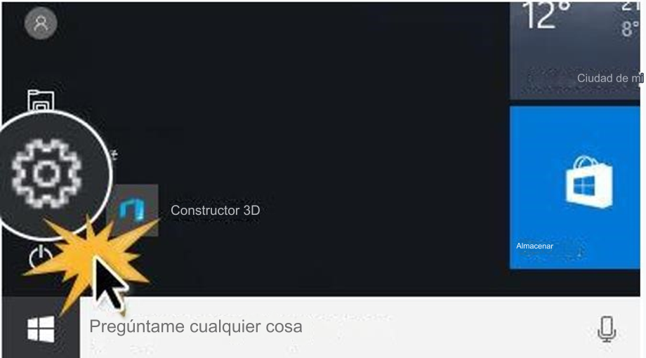
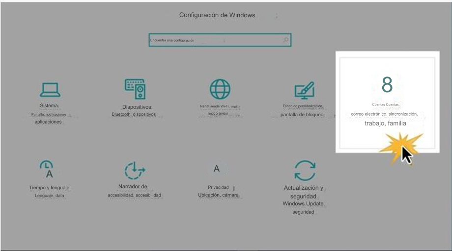
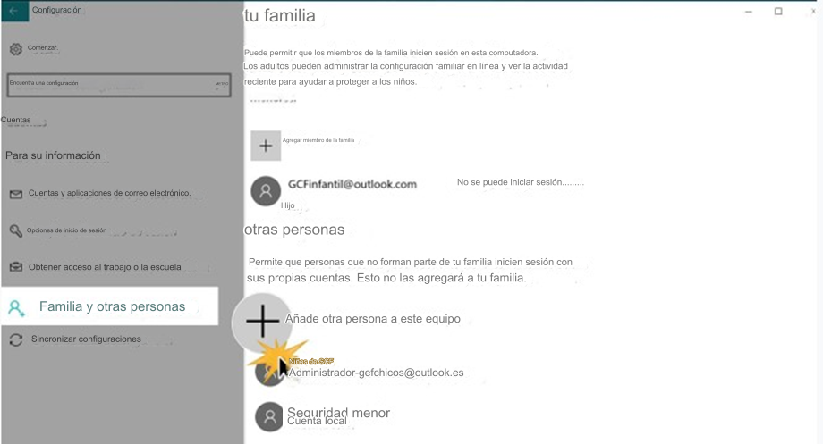

Paso 1:
En la barra de tareas en la parte inferior de la pantalla , haga clic en el ícono de Windows para acceder al menú Inicio , luego seleccione el engranaje para acceder a la aplicación Configuración

Paso 2:
Su dispositivos configuración menú se abrirá. En las opciones que aparecen , haga clic en Cuentas

Paso 3:
En el lado izquierdo de la pantalla, haga clic en Familia y otros opción.
En el lado derecho de la ventana puede agregar cuentas haciendo clic en el ícono Más (+).
Si elige agregar la cuenta a Su familia , adulto cuentas Podrás controlar lo que un niño hace en la computadora a través de controles parentales

Paso 4:
Para agregar una nueva cuenta , debe tener un correo electrónico o teléfono número asociado con Windows. Escriba esa información en el espacio en blanco y haga clic en Siguiente.
Paso 5:
Vas a ver confirmación de la cuenta creación . El nuevo usuario podrá acceder él con el mismo contraseña que utilizan para acceder cualquiera de los productos de Windows